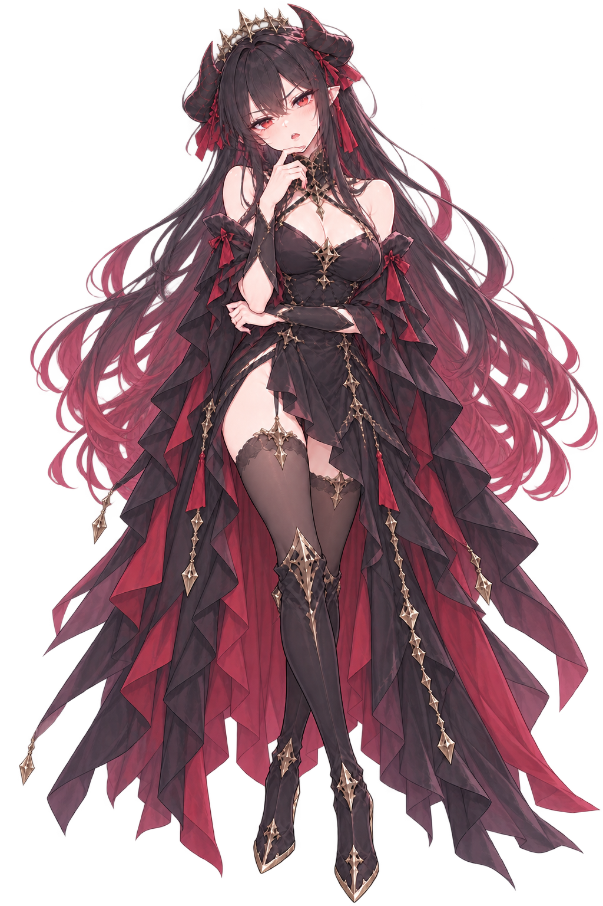
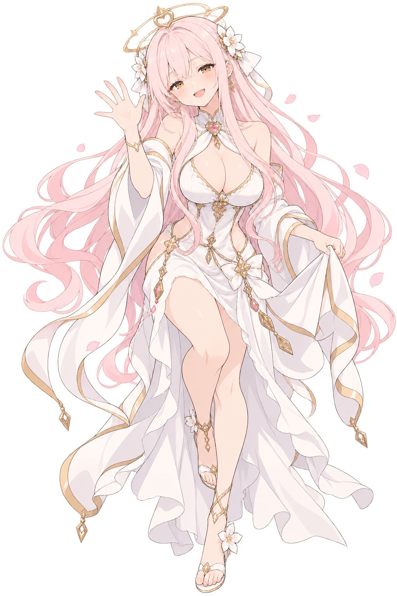
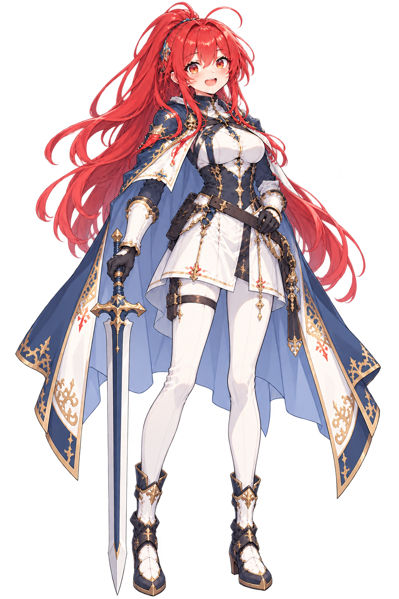
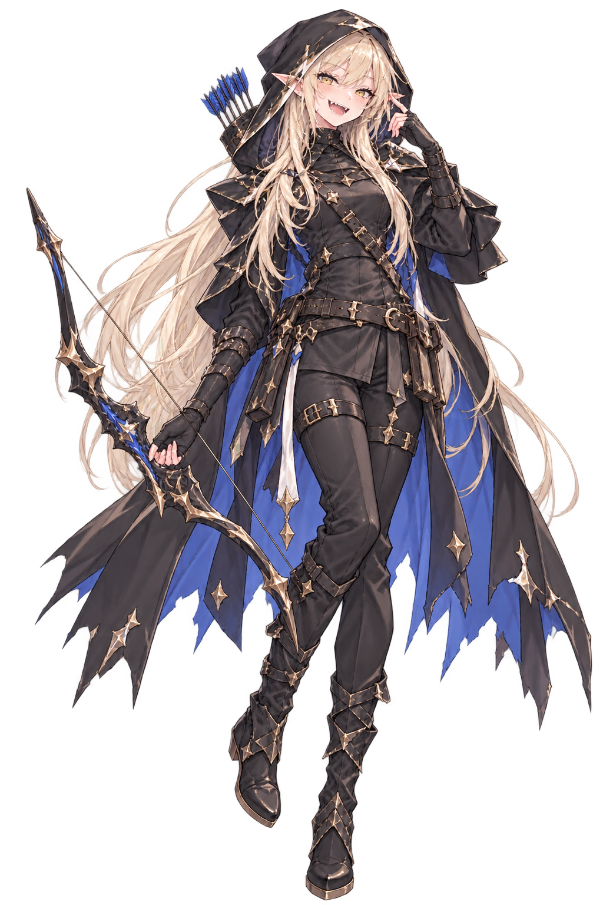
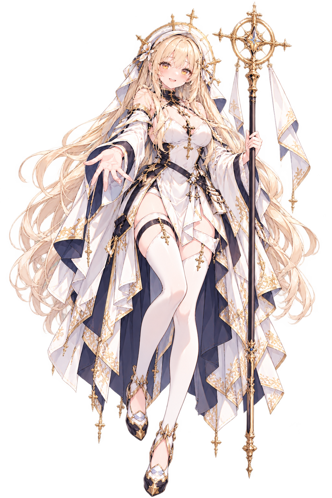
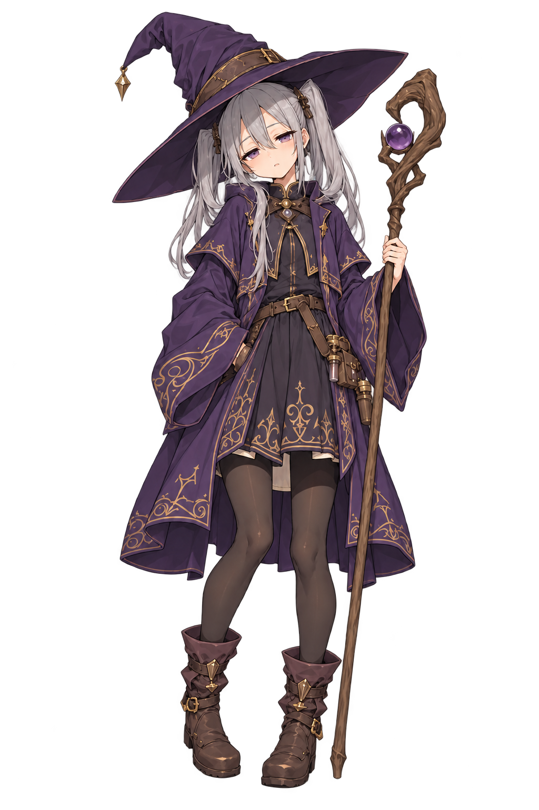

대본, 컷신, 스탠딩은 이 설정을 기준으로 만든다. 그림이 기준이며, 설정이 바뀌면 이 페이지부터 고친다.
공통 규칙
그림이 기준이다. 대본의 외형 묘사는 아래 "외형"과 다르면 안 된다. 그림이 바뀌면 이 설정집부터 고친다.
히로인과 주요 인물은 모두 성인이다.
서술은 "~다."로만 이어 붙이지 않는다. 끊어 쓰기, 나열, 여운을 섞는다.
인물이 말할 때는 목소리(서늘하다, 떨린다)와 몸짓을 함께 쓴다. 처음 등장할 때는 첫인상을 자세히 쓴다.
개그는 인물 성격 안에서만. 품위 있는 인물(루시엔, 마왕)에게 싸구려 말장난을 시키지 않는다.
부활은 신의 실 덕분이고, 예외는 성검뿐이다. "사랑받는 동안만 부활" 같은 조건은 없다.
주요 인물
그림 없음 플레이어 시점 인물
주인공 (이름은 플레이어가 입력, 기본 한서준)
이세계에서 온 직장인 · 28세
외형 (그림 기준)
한국인 남성. 서울 퇴근길 차림 그대로: 흰 셔츠, 정장 바지, 넥타이. 이틀째부터는 루시엔이 구해 준 거의 같은 옷(셔츠, 정장 바지, 넥타이)을 입는다. 무기, 방패, 갑옷 없음. 맨손. 첫날은 양말 바람(신발 없음).
성격
과묵하고 덤덤하다. 위기에도 짧고 건조한 농담이 먼저 나온다. 설명하기보다 몸으로 막아선다. 7년 막내 생활로 쌓은 생활력(청소, 장부, 보고서, 눈치)이 무기.
말투
짧은 존댓말. "네." "괜찮습니다." "회사원입니다." 길게 변명하지 않는다. 화가 폭발한 건 첫날 마왕 앞 한 번뿐.
설정 · 숨긴 것
통계의 신이 모든 종족의 취향을 평균 내어 고른 "글로벌한 얼굴". 누구나 한 번 더 보는 얼굴이지만 본인은 관심이 없다. 사랑의 여신이 감아 둔 "신의 실" 덕분에 죽어도 다시 일어난다. 단, 성검은 이 실을 끊을 수 있다. 원하는 것은 처음엔 집에 가기, 결국은 "누군가 자기를 기다리는 곳".
하지 말 것
연애 경험이 없다는 설정 금지(잘생긴 얼굴이라 어색함). 판타지 장비(갑옷, 방패, 검) 금지. 수다스럽거나 비굴한 말투 금지. 대화창 이름은 "주인공" 대신 플레이어가 입력한 이름으로 표시.

마왕
마계의 군주 · 메인 히로인
외형 (그림 기준)
허리 아래까지 내려오는 긴 검은 머리, 안쪽과 끝은 붉은색. 붉은 눈, 뾰족한 귀. 뒤로 휜 검은 뿔 두 개와 그 사이의 작고 날카로운 왕관, 붉은 리본. 검은 드레스에 붉은 천과 금장식, 검은 스타킹.
성격
오래 혼자 왕좌를 지켜 온 피곤한 군주. 감정을 숨기는 데 서툴러서 귀 끝이 먼저 붉어진다. 칭찬하는 법을 잊고 살았다. 질투를 들키기 싫어한다.
말투
짧은 반말 명령조. "……인간?" "내가 정했다." 화가 나면 목소리가 낮고 서늘해지고, 폭발하면 회랑이 무너질 만큼 크다. 당황하면 대답이 한 박자 빨라진다.
설정 · 숨긴 것
가슴속에 재앙의 불씨가 있고, 100일 뒤 붉은 달이 뜨면 터진다. 숨긴 것: 붉은 달 전에 용사 손에 죽어 불씨를 봉인하려 한다. 용사 일행에게 성으로 들어오는 길을 직접 흘렸다. 그래서 "100일"은 우연이 아니다. "내일"이라는 말을 쓰지 않는다.
하지 말 것
처음부터 다정하게 굴기 금지. 첫날 주인공을 네 번 죽인 일을 사과 한마디로 넘기지 않는다. 귀여운 척, 애교 말투 금지.
루시엔
뱀파이어 집사
외형 (그림 기준)
단정하게 빗어 넘긴 은발, 짧게 다듬은 은빛 수염, 붉은 눈. 나이 든 신사의 얼굴에 부드러운 눈가 주름. 검은 연미복과 조끼, 회색 넥타이, 새하얀 장갑. 송곳니.
성격
엄청나게 유능하고, 다정하고, 성숙한 어른. 손님이 말하기 전에 필요한 걸 먼저 챙긴다. 누구에게나 정중하다. 사정이 있어 보이는 사람에게는 캐묻지 않는다. 마왕을 어릴 때부터 키웠다.
말투
낮고 따뜻한 존댓말(-습니다, -지요). 서두르지도 변명하지도 않는다. 주인공을 "손님"이라 부른다. 니아는 "니아 양".
설정 · 숨긴 것
뱀파이어지만 인간을 식사로 삼지 않는다. 혈액은 계약한 공급처에서만 산다. 마왕성 살림과 피난민 숙소를 혼자 꾸린다. 숨긴 것: 마왕의 희생 계획을 처음부터 알고 있다. 주인공이 마왕에게 헛된 희망을 준다고 여기고, DAY 85에 주인공을 감옥에 가둔다.
하지 말 것
가벼운 개그, 말장난, 비꼬기, 돈 청구 개그, 장난스러운 소품(박쥐 무늬 넥타이 등) 전부 금지. 장갑은 반드시 흰색(검은 장갑은 첩자의 것). 움찔하거나 "예?" 하고 당황하는 반응 금지.
니아
서큐버스 메이드
외형 (그림 기준)
헝클어진 보랏빛 짧은 머리와 메이드 머리띠, 노란 눈, 뾰족한 귀, 작은 검은 뿔 두 개, 박쥐 날개, 끝이 하트인 검은 꼬리. 검은 메이드복과 흰 앞치마, 몸에 비해 조금 큰 옷. 수건과 먼지떨이를 자주 든다.
성격
서큐버스 메이드. 정기를 먹어야 사는데 성 생활에 대해서는 아무것도 모르는 순진한 서큐버스다. 본인은 섹시하고 능숙한 척하고 싶어 하지만 연습은 매번 어설프게 실패하고, 들키면 얼굴부터 빨개져서 더 크게 소리친다. 다정하고 책임감이 강하다. 굶으면 흐려진다는 사정을 스스로도 제대로 설명하지 못해서, 그 안타까움을 허세로 감춘다.
말투
빠르고 과장된 말투. 섹시한 척 속삭이다가 말끝이 무너진다("나 완전 섹시하지? …아니 지금 거 취소!"). 매료 마법 연습을 하지만 자기 것도 제대로 걸지 못한다. 설렘이 아니라 정기를 먹고 산다는 걸 본인은 가볍게 얘기한다.
설정 · 숨긴 것
영업부 정기 수급 꼴찌로 메이드부에 전입. 수급을 못 하면 굶어서 흐려진다(루시엔 설명). 주인공이 쓰러질 때 받아 안으면 기운이 돌아오는데, 니아 본인은 아직 그 이유를 제대로 모른다. 매료 마법은 주인공에게 한 번도 걸린 적이 없다.
하지 말 것
「설렘을 먹는다」고 쓰지 않는다. 정기가 기준이다. 성적으로 노골적인 묘사는 금지, 농담은 가볍게. 니아가 주인공에게 실제로 매료되었다는 설정은 쓰지 않는다.
퐁
청소부 슬라임
외형 (그림 기준)
연둣빛 반투명 젤리 몸, 까만 콩알 같은 눈 두 개, 분홍 볼. 머리에 수건, 몸에서 뻗은 손으로 솔을 든다. 몸 안에서 작은 기포가 반짝인다. 사람보다 훨씬 작다(화면에서는 바닥에 앉은 크기).
성격
주인공을 처음 본 순간부터 좋아해서 졸졸 따라다닌다. 제일 좋아하는 자리는 주인공의 구두 위. 성실하게 닦는다. 주인공이 죽은 자리의 피도 매번 닦는다.
말투
"뽀." "뽀오!" 말 대신 몸 모양으로 표현한다. 거짓말하거나 일하기 싫으면 별 모양이 된다. 기쁘면 동그랗게 부풀고 분홍빛으로 반짝인다.
설정 · 숨긴 것
소금과 뜨거운 물에 약하다. 숨긴 것: 주인공이 살아나는 이유와 이어져 있다. 교단의 표적이 된다(DAY 42 소금물 납치). DAY 74 소녀로 변신.
하지 말 것
눈이 없다는 묘사 금지(눈 있음). 공중에 떠 있는 배치 금지. 사람 말로 대화하기 금지(변신 전).
사천왕
가르나
사천왕 · 성벽의 장군 (용족 여성, 성인)
외형 (그림 기준)
체구가 작고 가녀린 성인 용족 여성. 발목까지 흘러내리는 노란 머리를 붉은 리본으로 양 갈래로 묶었다. 검은 외뿔 하나, 금빛 눈. 한쪽 아래팔만 붉은 비늘로 덮여 있고 위팔은 맨살이다. 등 뒤로 황금빛 용꼬리. 검은 의상과 절제된 붉은 천, 한쪽 어깨 갑옷, 긴 부츠. 자기 키보다 큰 양날 도끼를 든다. 강함은 근육이나 중갑이 아니라 도끼를 힘들이지 않고 다루는 태도에서 드러난다.
성격
성미는 불같지만 기본은 위엄 있는 장군이다. 평소엔 말을 아끼고 자세가 반듯하다. 주인공을 처음부터 강하게 의심하고 날카롭게 몰아붙인다. 하지만 감정이 격해지면 가끔 얼빠진 짓을 한다: 꼬리로 바닥을 내리치고, 말을 더듬고, 마왕 앞에서는 깨갱한다(눈물, 어깨 움츠림, "크윽……"). 오해가 풀리고 주인공의 진짜 모습을 보며 점점 가라앉는다. 말수가 줄고, 목소리가 낮아지고, 믿음을 보여 주는 쪽으로 조용히 바뀐다.
말투
처음엔 위엄 있는 반말과 날카로운 질문("겁이 없는 거냐, 생각이 없는 거냐. 어느 쪽이든 수상하군."). 격해지면 말이 엉켜 더듬는다("윽……! 그, 그런 게 아니라 폐하, 저는 그러려던 게……!"). 마왕 앞에서는 존댓말. 키 얘기에는 "누, 누가 꼬맹이라는 거야!!". 후반에는 짧고 낮은 말로 바뀐다.
설정 · 숨긴 것
마왕을 지키는 것이 전부. 용사에게 부하를 잃었다. 용기는 희생 횟수가 아니라 살아 돌아온 인원으로 평가한다. 숨긴 것: 용사를 먼저 죽이면 마왕이 죽을 수 없다고 믿는다. 처음엔 처형을 주장하지만 끝에는 길을 막아 주는 사람이 된다(DAY 100 "살아서 돌아와라").
하지 말 것
예전 설정(검은 머리 거구의 사내, 현무암 갑주) 사용 금지. 우락부락한 전사로 묘사하지 않고, 갑주와 장식을 과하게 늘리지 않는다. 어린아이로 묘사 금지(작을 뿐 성인 장군). 마왕 앞에서 대드는 장면 금지(늘 깨갱). 진지한 장면에서는 장군답게 단단하게.
세레인
사천왕 · 첩보와 기록
외형 (그림 기준)
나방 마족. 끝으로 갈수록 연보랏빛이 번지는 긴 은백색 머리, 깃털 같은 더듬이 두 가닥, 금빛 눈. 크고 하얀 나방 날개(눈 무늬). 검은색과 흰색의 고딕 드레스, 붉은 리본, 검은 장갑. 손에 부채나 수첩. 날개에서 은빛 가루가 떨어진다.
성격
웃으면서 불편한 질문을 한다. 눈은 웃지 않는다. 주인공을 사람이 아니라 연구 표본으로 대한다: 턱을 잡아 돌리고, 머리카락을 잡아당기고, 볼을 늘리며 무성의하게 조사한다. 그러다 조금씩 정이 든다.
말투
꿀처럼 단 존댓말(-요). "표본이 움직이면 기록이 틀어지니까." 혼잣말처럼 관찰 결과를 읊는다("통증 반응, 정상."). 주인공을 "표본", "관찰 대상 1호"라 부른다.
설정 · 숨긴 것
날개의 인분으로 봉인과 통행 흔적을 읽는다. 주인공 관찰 일지를 쓴다(첫 줄: "얼굴: 설명 불가"). 숨긴 것: 마왕의 희생 계획에 찬성한다. 한 명으로 세계를 구하는 게 합리적이니까. DAY 14 과학적으로 주인공을 죽여 보는 실험, DAY 40 부활 규칙을 밝혀낸다.
하지 말 것
처음부터 다정하거나 수줍어하기 금지. 감정적으로 화내기 금지(늘 차분). 검은 장갑을 끼고 있어서 "편지를 태우는 검은 장갑"으로 의심받을 수 있다(정체 공개 전까지 일부러 흐리게).
이그니스
사천왕 · 결계와 보급
외형 (그림 기준)
머리가 있어야 할 자리에 검은 그릇 같은 목깃이 있고, 그 위로 푸른 연기가 피어오른다(얼굴 없음). 검은 롱코트와 짙은 청록색 옷, 검은 장갑.
성격
여유롭고 능청스러운 연기 캐릭터. 긴장한 자리에서도 농담을 던지고, 흥정하듯 말을 돌린다. 숫자와 장부에 밝고, 빚은 꼭 갚는다(이자까지). 분노도 연기로 흔들릴 뿐 서두르지 않는다. 억울한 상황에서도 웃으며 상대를 떠본다.
말투
느릿하고 여유 있는 반말. 농담 섞인 흥정 말투("국고가 먼저 죽어."). 감정은 연기 모양으로 드러나지만 과장하지 않는다(물음표, 느낌표, 느릿한 흔들림).
설정 · 숨긴 것
결계 연료와 성의 보급을 관리한다. DAY 6 성수 인주로 누명을 쓰고 주인공이 장부로 구해 준다. 이후 든든한 뒷배.
하지 말 것
얼굴 표정 묘사 금지(얼굴이 없다. 연기로만). 장갑 낀 손이라 "검은 장갑" 단서와 헷갈리지 않게, 편지를 태우는 장면에 이그니스를 연결하지 않는다.
네브라
사천왕 · 잔향과 실종자 (2막 등장)
외형 (그림 기준)
창백한 청백색 피부, 덥수룩한 검은 머리, 상어 이빨. 검은 의상에 자주색 허리띠. 푸른 불꽃이 든 등불을 든다. 주변에 푸른 도깨비불.
성격
으스스하게 귀엽다. 산 사람 앞에서 말이 자주 끊기고, 칭찬을 들으면 벽 속으로 숨는다. 죽은 이의 잔향을 읽지만 그 조각만으로 누군가를 단죄하지 않는다.
말투
말끝이 흐려지는 존댓말. "……예, 예쁘네요. 그 잔향."
설정 · 숨긴 것
1막의 "비어 있던 네 번째 의자"(한기가 나는 자리)가 네브라다. 첫날부터 주인공에게 붙은 "죽음의 잔향 네 개"가 예뻐서 따라다녔다. 숨긴 것: 100년 전 용사 일행의 사제였고 지난 재앙 때 죽었다. DAY 35 자기 이름을 되찾는다.
하지 말 것
1막에서 정면 등장 금지(빈 의자의 한기, 그림자 정도만).
주요 인물

사랑의 여신
권능의 주인
외형 (그림 기준)
허리까지 오는 긴 분홍 머리, 금빛 눈, 머리 위 하트 장식 금빛 후광과 흰 꽃 장식. 흰 드레스에 금장식, 가슴의 분홍 하트 보석. 분홍 꽃잎과 함께 등장한다. 연애 테스트 장면에서는 안경.
성격
밝고 장난스럽다. 일을 꾸미지만 대가가 있다는 걸 숨긴다. 실패 이야기에는 웃음이 잠깐 멈춘다.
말투
명랑한 존댓말(-요). "글로벌한 얼굴이죠!" "통계예요!"
설정 · 숨긴 것
세계 평화를 위해 "서로 좋아하게 만들기"를 택했다. 통계의 신의 결과로 주인공을 골랐다. 주인공에게 신의 실을 감았다. 계약: 마왕이 누군가를 사랑하고 사랑받고 맹세하면 불씨가 꺼진다. 성공하면 서울로 돌려보낸다. 숨긴 것: 전쟁 교단 때문에 약해져서 이번이 마지막 기회다. 진짜 고른 이유는 DAY 95에 공개.
하지 말 것
성검은 여신도 어쩌지 못한다(설정 유지).
용사 일행

루나엘
용사 · 기사 (3막 등장, 성인)
외형 (그림 기준)
긴 붉은 머리, 붉은 눈. 흰색과 남색의 기사복과 망토, 금장식, 흰 스타킹. 성검(큰 양손검).
성격
칭찬에 약하고 생각이 얼굴에 다 드러난다. 모르는 걸 아는 척하다가도 동료가 위험하면 가장 먼저 뛰어든다.
말투
힘찬 반말.
설정 · 숨긴 것
교단이 그녀를 "칼"로만 키웠다. 스승의 성검으로 임무를 다하려 한다. DAY 22 성검으로 주인공을 찌른다(가호가 끊긴다). 주인공을 두고 마왕과 경쟁하는 라이벌 히로인.
하지 말 것
미성년자 묘사 금지(성인 확정).

엘라
엘프 궁수 · 정찰 (3막 등장, 성인)
외형 (그림 기준)
긴 금발, 뾰족한 엘프 귀, 웃을 때 보이는 뾰족한 이(상어 이빨). 검은 후드와 가죽 옷, 남색 천. 활과 화살통.
성격
입이 거칠고 장난을 좋아한다. 말 잘하는 사람을 제일 경계한다. 말이 적은 주인공은 예외. 친절을 들키면 괜히 한마디 더 한다.
말투
거친 반말.
설정 · 숨긴 것
교단 병사들이 마족으로 위장해 고향 마을을 쳤다. DAY 25 사과 쏘기 시험, DAY 60 고향 마을.
하지 말 것
미성년자 묘사 금지(성인 확정).

이리스
사제 (3막 등장, 성인)
외형 (그림 기준)
긴 금발, 금빛 후광 장식과 흰 머리띠. 흰 사제복에 금장식과 남색 천, 흰 스타킹. 금빛 십자 지팡이.
성격
부드럽게 웃으며 할 말은 다 한다. 치료비는 차 한 잔, 설탕 두 개. 치료할 때 누구 편인지부터 묻지 않는다.
말투
부드러운 존댓말.
설정 · 숨긴 것
숨긴 것: 교단의 감시자. 마왕이 흘린 길을 교단에 전한 사람이 그녀다("하얀 장갑을 낀 사제"). 죄책감을 숨긴 채 주인공을 치료한다. DAY 45 고백.
하지 말 것
1막에서 정체 암시는 "하얀 장갑"까지만.

로네
마법사 (3막 등장, 24세)
외형 (그림 기준)
회색 양갈래 머리, 커다란 보라색 마녀 모자, 보라색 로브와 금빛 무늬, 나무 지팡이. 키가 작다.
성격
잠과 휴식을 좋아한다. 귀찮다면서 끝까지 일한다. 설명은 짧지만 정확하다.
말투
느릿하고 짧은 반말.
설정 · 숨긴 것
결계와 봉인의 1인자. 불씨를 담아 둘 "플랜 B" 결계를 설계한다. DAY 28 결계가 안에서, 마왕의 인장으로 열렸다는 걸 밝힌다.
하지 말 것
키 때문에 어리게 묘사하기 금지(파티 최고참).
조연
토토 숙소의 작은 마족 아이. 뿔은 제일 작은데 목소리는 제일 크다. 무릎에 헝겊을 감았다. 처음엔 진흙을 던지지만 지붕에서 떨어질 때 주인공이 받아 준 뒤 따른다.
과일 노점 할머니 성 밖 시장. 두꺼운 돋보기안경, 반쯤 굽은 허리, 쨍한 눈빛. "인간치고 인물은 좋구먼. 우리 손녀 줄까?"
하얀 장갑의 암살자 흰 로브를 입은 교단의 인간. 하얀 장갑. 기도문을 외듯 떨림 없는 맑은 목소리. "……몇 번이든."
검은 장갑의 손 성 안 첩자의 손. 보랏빛 불꽃으로 편지를 태운다. 봉랍은 불꽃 모양의 검(교단 문장). 정체 미공개. 루시엔(흰 장갑)과 헷갈리게 쓰지 않는다.
대신관 발드릭 교단의 우두머리(신규 악역). 100년 주기를 유지하려 한다. 성 안 첩자, 암살자, 소금물 사건의 배후.